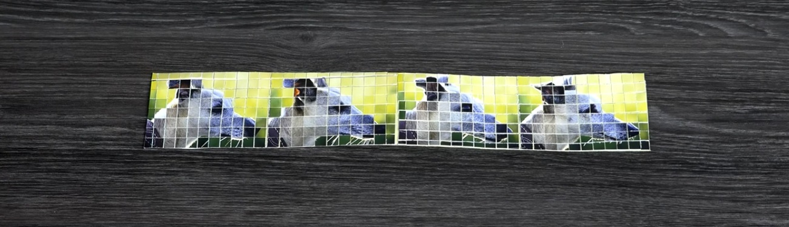
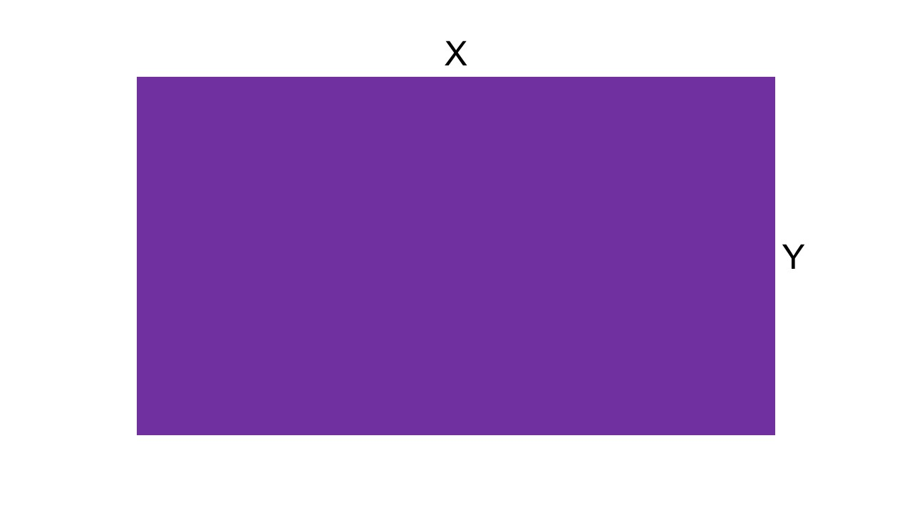

Fatiamento de Imagens
O exercício em questão propõe a explicação do Modelo Matemático por trás do experimento de fatiamento de images para a geração de novas imagens semalhantes a original, conforme executado na primeira parte do vídeo AMAZING SCIENCE EXPERIMENTS AND TRICKS! Compilation.
Primeiro, tomamos uma imagem retangular qualquer, como a do exemplo no vídeo, em que suas dimensões são representadas por X de largura e Y de altura.
Em seguida, é iniciado o processo de fatiamento da imagem, a fim obter outras imagens semelhantes a partir da imagem matriz. A imagem é fatiada no sentido vertical, de forma que existe uma relação entre a espessura do fatiamento e o nível de representação da semelhança da imagem: quanto menor a espessura, mais próxima à imagem matriz.
A imagem após fatiada é reorganizada de modo intercalado, juntando todas as fatias pares ordenadamente entre si e depois o mesmo processo é aplicado às fatías ímpares. Desta forma, são geradas duas novas imagens contendo metade da largura da imagem matriz.
As duas novas imagens são submetidas a um novo fatiamento, desta vez, no sentido horizontal. Assim, as mesmas regras aplicadas no primeiro fatiamento são válidas neste.
Por fim, são reorganizadas seguindo a mesma lógica de intercalação do processo anterior. Depois da reorganização, são formadas quatro novas imagens, em que cada uma delas contém tanto metade da largura quanto da altura da imagem original.